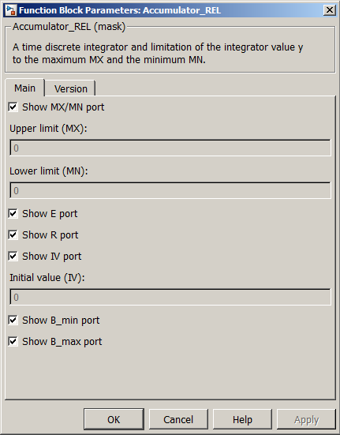

| MBDS Environment |
|
Accumulator_REL |
MATLAB Helpdesk |
General
Limited running sum.
Library
DescriptionMBDS Blockset
A time discrete integrator and limitation of the integrator value y to the maximum MX and the minimum MN.
Using the parameter mask the block can be configured according to the users needs. Via register card Main the block input and output ports can be shown or hidden (see Figure 1).
- Show MX/MN port. If checked, the block provides an enable input port for MX and MN.
- MX, MN values. The MX and MN values can be specified here if 'MX and MN as Inports' is hidden.
- Show E port. If checked, the block provides an enable input port. If unchecked, the block cannot be disabled.
- Show R port. If checked, the block provides a reset input port. If unchecked, the block cannot be reset.
- Show IV port. If checked, the block provides an input port for the initial value used when reset the block. If unchecked, the initial value can be configured via a mask parameter.
- Initial value (IV). Here the initial value can be specified if the IV port is hidden.
- Show B_min port. If checked, the block provides an outport for the lower limitation flag.
- Show B_max port. If checked, the block provides an outport for the upper limitation flag

Figure 1: Parameter Mask Dialog - Register card MainThe register card Version displays the block version information.
Inputs and Outputs
Example*) Except enumeration data types.
Port I/O Data Type Description MX In Any* Upper limitation value MN In Any* Lower limitation value u
In
Any*
Input signal E In boolean Suppresses the block calculation while false R In boolean Resets the block state to its initial value while true IV In Any* Initial value y Out Any* Accumulated and limited input signal B_min Out boolean Outputs true if lower limitation is active B_max Out boolean Outputs true if upper limitation is active
Refer to the example.